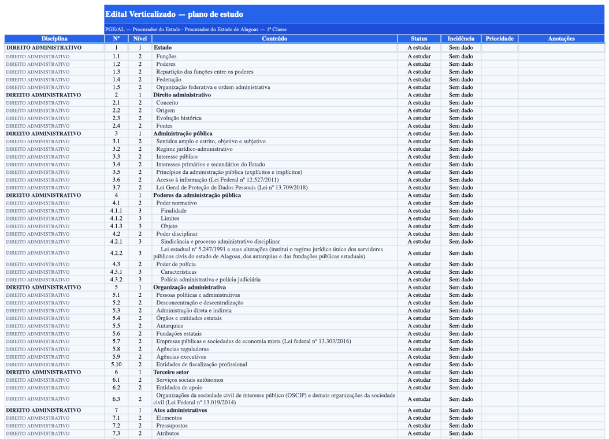
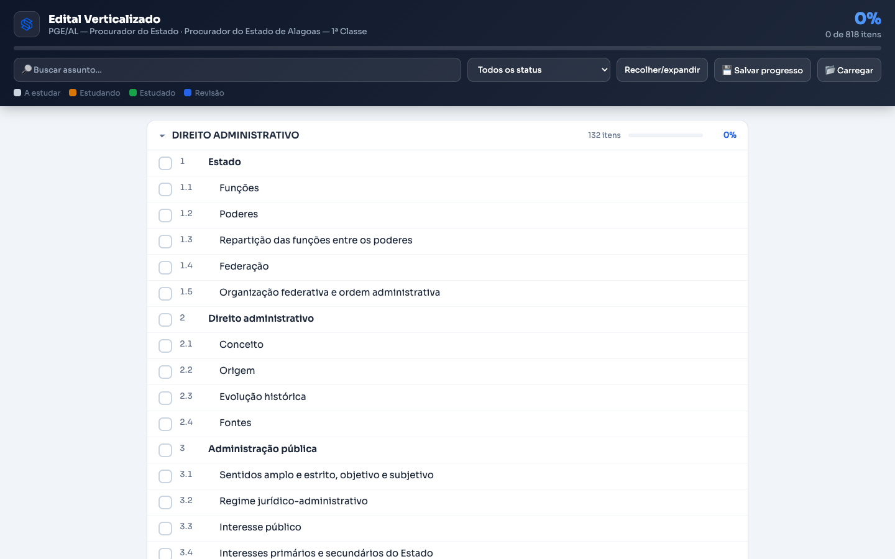
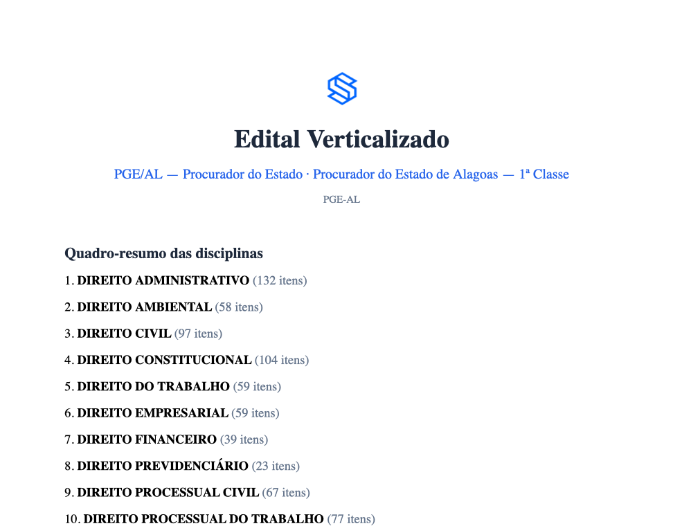

Uma skill gratuita de IA que lê o PDF do edital do seu concurso e devolve um plano acompanhável em três formatos — preservando cada item, na ordem exata da banca.
Sem planilha em branco, sem fim de semana perdido. Você traz o edital; a IA faz o trabalho braçal.
Acione a skill no Claude ("verticalizar meu edital") e anexe o edital cru, do jeito que a banca publicou. Serve FGV, CEBRASPE e outras.
Em edital com vários cargos, ela detecta todos e você escolhe o seu. Depois é só dizer quais formatos quer: Excel, HTML, DOCX — ou os três.
Cada disciplina, assunto e subitem vira uma linha acompanhável, com status, prioridade e cobertura por disciplina calculada.
Gerados de uma única extração — o conteúdo é idêntico nos três, cada um pra um momento do estudo.

Uma linha por item, dropdowns de status e prioridade, cores automáticas e aba de resumo com % de cobertura por disciplina, com gráfico.

Clique no item e o progresso sobe na hora. Disciplinas recolhíveis, busca, filtro por status e backup do progresso em arquivo.
Testar o painel ao vivo (edital real da PGE-AL) →
Verticalizado clássico com caixas ☐, quadro-resumo e uma disciplina por página. Pra quem gosta de papel na mesa.
"A IA organiza. Você decide."
A ferramenta nunca inventa o que "mais cai" na prova: a coluna Incidência nasce vazia de propósito, pra você preencher com as provas reais da sua banca. A IA estrutura o edital com fidelidade e te devolve tempo — as decisões de estudo continuam suas.
Baixe uma vez, use em qualquer edital.
verticalizar-edital-pro.skillDescompacte o .skill (é um zip) na pasta de skills:
~/.claude/skills/verticalizar-edital-pro/Os geradores usam três bibliotecas:
pip install pymupdf openpyxl python-docxPasso a passo completo no README do projeto.